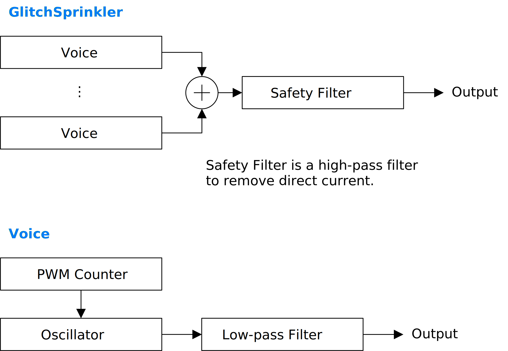

Update: 2024-10-11
GlitchSprinkler は速いアルペジオに特化したシンセサイザです。オシレータの周期を整数のサンプル数のみとすることで安価にアンチエイリアシングを行っています。このアンチエイリアシングの副作用により、特に音程が高いときにピッチがずれて独特の音律が現れます。
full - VST 3 をダウンロード (github.com) macOS - VST 3 をダウンロード (github.com) 注意: プリセットはサンプリング周波数が 48000 Hz でなければ想定された音が出ません。
full パッケージには次のビルドが含まれています。
Linux ビルドは Ubuntu 24.04 でビルドしています。もし Ubuntu 24.04 以外のディストリビューションを使っているときは、プラグインが読み込まれないなどの不具合が起こることがあります。この場合はビルド手順に沿ってソースコードからビルドしてください。
macOS で使用するときは macOS
パッケージのダウンロードを推奨します。また Apple Developer Program
に加入していないので、インストール時に Gatekeeper
を迂回するように設定する必要があります。詳細は
インストール -> macOS
の節を参照してください。
何かあれば GitHub
のリポジトリに issue を作るか ryukau@gmail.com
までお気軽にどうぞ。
paypal.me/ryukau から開発資金を投げ銭することもできます。
名前が .vst3 で終わるディレクトリを OS
ごとに決められた位置に配置してください。
/Program Files/Common Files/VST3/
に配置します。$HOME/.vst3/ に配置します。/Library/Audio/Plug-ins/VST3/ あるいは
/Users/$USERNAME/Library/Audio/Plug-ins/VST3/
に配置します。DAW によっては上記とは別に VST3 をインストールできるディレクトリを提供していることがあります。詳しくは利用している DAW のマニュアルを参照してください。
注意: プリセットの無いプラグインもあります。
プリセットはページの最上部のリンクからダウンロードできるプラグインパッケージに含まれています。以下はプリセットのインストール手順です。
presets ディレクトリ内の Uhhyou
ディレクトリを OS ごとに決められたディレクトリに配置。以下は OS ごとのプリセットの配置先の一覧です。
/Users/$USERNAME/Documents/VST3 Presets$HOME/.vst3/presets/Users/$USERNAME/Library/Audio/Presetsプリセットディレクトリの名前はプラグインと同じである必要があります。配置先のディレクトリが無いときは作成してください。
プラグインが DAW に認識されないときは C++ redistributable
をインストールしてみてください。インストーラは次のリンクからダウンロードできます。ファイル名は
vc_redist.x64.exe です。
Ubuntu 24.04 では次のパッケージのインストールが必要です。
sudo apt install libxcb-cursor0 libxkbcommon-x11-0もし DAW がプラグインを認識しないときは、下のリンクの
Package Requirements を参考にして VST3
に必要なパッケージがすべてインストールされているか確認してください。
REAPER の Linux 版がプラグインを認識しないときは
~/.config/REAPER/reaper-vstplugins64.ini を削除して
REAPER を再起動してみてください。
重要: full
パッケージは動作未確認です。以下のファイルは codesign
されていないので削除する必要があるかもしれません。
Contents/Resources/DocumentationContents/x86_64-linuxContents/x86_64-winmacOS
パッケージでは上記のファイルの削除は不要です。また、すべてのパッケージは
codesign コマンドの ad-hoc signing
の状態になっています。
プラグインの初回起動時に「破損している」という趣旨のメッセージが表示されることがあります。この場合は、ターミナルを開いて、解凍した
.vst3
ディレクトリに次のコマンドのどちらか、あるいは両方を適用してみてください。
/path/to/PluginName.vst3
の部分はインストールしたプラグインのパスに置き換えてください。
xattr -rd com.apple.quarantine /path/to/PluginName.vst3
xattr -rc /path/to/PluginName.vst3プラグインは署名されていない (unsigned) 、または公証されていない (un-notarized) アプリケーションとして認識されることがあります。この場合は、警告メッセージが表示された後に、システム環境設定を開いて「セキュリティとプライバシー」 → 「一般」の「このまま開く」ボタンを押してください。以下にリンクした Apple 公式のヘルプページにスクリーンショット付きで同じ手順が掲載されています。「ノータリゼーションを受けていない App や未確認の開発元の App を開きたい場合」を参照してください。
ここまでの手順を経てまだ動かないときはインストール先を
/Library/Audio/Plug-ins/VST3/ あるいは
/Users/$USERNAME/Library/Audio/Plug-ins/VST3/
のいずれか使っていなかったほうに変えてみてください。
上記の方法がすべて上手くいかなかったときは以下の手順を試してみてください。
sudo spctl --master-disable
を実行。上記の手順を実行するとシステムのセキュリティが弱くなるので注意してください。元に戻すには以下の手順を実行してください。
sudo spctl --master-enable
を実行。codesign
の適用注意 この節の内容は macOS
パッケージには関連しないと考えられますが未検証です。 (GitHub の
issue)
full
パッケージを利用する場合は以下のコマンドを適用することで利用できるかもしれません。
sudo codesign --force --deep -s - /path/to/PluginName.vst3codesign の利用には Xcode
のインストールが必要となるかもしれません。
初回設定時は手動で次のファイルを作成してください。
/Users/ユーザ名/AppData/Roaming/UhhyouPlugins/style/style.json
。$XDG_CONFIG_HOME/UhhyouPlugins/style/style.json 。
$XDG_CONFIG_HOME が空のときは
$HOME/.config/UhhyouPlugins/style/style.json 。/Users/$USERNAME/Library/Preferences/UhhyouPlugins/style/style.json
。プラグインのウィンドウを開くたびに style.json
が読み込まれて更新されます。
既存の色のテーマを次のリンクに掲載しています。
style.json にコピペして使ってください。
style.json の設定例です。
{
"fontFamily": "Tinos",
"fontBold": true,
"fontItalic": true,
"foreground": "#000000",
"foregroundButtonOn": "#000000",
"foregroundInactive": "#8a8a8a",
"background": "#ffffff",
"boxBackground": "#ffffff",
"border": "#000000",
"borderCheckbox": "#000000",
"borderLabel": "#000000",
"unfocused": "#dddddd",
"highlightMain": "#0ba4f1",
"highlightAccent": "#13c136",
"highlightButton": "#fcc04f",
"highlightWarning": "#fc8080",
"overlay": "#00000088",
"overlayHighlight": "#00ff0033"
}以下はフォントオプションの一覧です。
fontFamily: フォントファミリ名。fontBold: ボールドスタイル (太字) を
true で有効、 false で無効。fontItalic: イタリックスタイル (斜体) を
true で有効、 false で無効。カスタムフォントを使用するには、プラグインディレクトリの
*.vst3/Contents/Resources/Fonts に *.ttf
ファイルを配置します。
注意: fontFamily 、
fontBold 、 fontItalic
で設定したフォントファミリ名とスタイルの組み合わせが
*.vst3/Contents/Resources/Fonts 以下のいずれかの
*.ttf ファイルに含まれていないときは VSTGUI
が指定するデフォルトフォントが使用されます。
fontFamily が長さ 0 の文字列 ""
のときはフォールバックとして "Tinos"
に設定されます。長さが 1
以上かつ、存在しないフォントファミリ名が指定されると VSTGUI
が指定するデフォルトフォントが使用されます。
ボールドあるいはイタリック以外のスタイルは VSTGUI がサポートしていないので動作確認していません。該当する例としては Noto フォントの Demi Light や、 Roboto フォントの Thin や Black などがあります。
16 進数カラーコードを使っています。
プラグインはカラーコードの 1 文字目を無視します。よって
?102938 や \n11335577
も有効なカラーコードです。
2 文字目以降のカラーコードの値に 0-9a-f
以外の文字を使わないでください。
以下は設定できる色の一覧です。設定に抜けがあるとデフォルトの色が使われます。
foreground: 文字の色。foregroundButtonOn:
オンになっているボタンの文字の色。 foreground か
boxBackground
のいずれかと同じ値にすることを推奨します。foregroundInactive:
非アクティブなタブの文字の色。background: 背景色。boxBackground: 矩形の UI 部品の内側の背景色。border: 縁の色。borderCheckbox: チェックボックスの縁の色。borderLabel:
パラメータセクションのラベルの左右の直線の色。unfocused:
つまみがフォーカスされていないときの色。highlightMain:
フォーカスされたときの色。スライダの値の表示にも使用されます。highlightAccent:
フォーカスされたときの色。一部のプラグインをカラフルにするために使用されます。highlightButton:
ボタンがフォーカスされたときの色。highlightWarning: 変更に注意を要する UI
がフォーカスされたときの色。overlay: オーバーレイの色。overlayHighlight:
フォーカスを示すオーバーレイの色。パラメータが割り当てられているコントロールの上で 右クリック すると、 DAW から提供されるコンテキストメニューが開きます。
つまみと数値スライダでは次の操作ができます。
音程が高くなるほどピッチがずれます。これは GlitchSprinkler で使われているアンチエイリアシングの副作用です。
直流が乗ります。 Safety Filter Mix を 1
にすると直流を切る -6 dB/oct
のハイパスフィルタがかかります。音の開始時点での振幅の跳ね上がりが大きいときは、より切れ味の鋭い外部のハイパスフィルタを使ってください。
MIDI チャンネル 16 のノートイベントは、通常のノートのように音が出ません。代わりに次に演奏する音程を変化させます。発音中のノートの周波数は変更されません。
音程の変化は、発音されるノートの周波数に MIDI チャンネル 16 で最後に演奏されたノート番号を乗算する形で行われます。つまり 0 以上の整数の倍音を演奏することができます。以下は計算式です。
noteFrequency = baseFrequency * lastNoteNumberOnChannel16;図が小さいときはブラウザのショートカット Ctrl + マウスホイール や、右クリックから「画像だけを表示」などで拡大できます。
図で示されているのは大まかな信号の流れです。実装と厳密に対応しているわけではないので注意してください。

角かっこ [] で囲まれているのは単位です。以下は単位の一覧です。
1 / 12
オクターブ。1 / 100 半音。出力ゲインです。
直接の出力と、ハイパスフィルタをかけた出力を混ぜる比率です。 1 のときにハイパスフィルタをかけた出力が 100% になります。
このハイパスフィルタは -6 dB/oct の減衰を持ち、簡易に直流を取り除くために備えられています。直流が大きいときは音の開始時点（トランジエント）の部分に癖が残ることがあるので、より切れ味のいい外部のハイパスフィルタに切り替えることを推奨します。
以下は信号の流れの概要です。
hp = highpass(input);
output = input + (Safety Filter Mix) * (hp - input);アルペジオのノート 1 つ分の時間でエンベロープが減衰する量です。
アルペジオのノート 1 つ分の時間の時間は、 DAW で設定されたテンポと
Note / Beat に依存します。以下は計算式です。
samplesPerBeat = 60 * sampleRate / tempo;
noteDurationInSamples = samplesPerBeat / (`Note / Beat`);コードを弾くときはオン、単旋律を弾くときはオフにしてください。
オンにすると最大 256 音まで同時発音します。オフのときは
Unison セクションの nVoice
の数だけ同時発音します。
オンにするとノートオフの後もエンベロープによる減衰が続きます。オフにするとノートオフの後に波形が 1 周するのを待ってから音を止めます。オフのときでも音程が低いとしばらく音が残ります。
ピアノのサステインペダルと似たようなスイッチです。
エンベロープにスムーシングフィルタをかけて音の始まりと終わりに出るポップノイズを抑えます。
ポップノイズは Filter
がオンのときや、音程が低いときに、特に目立ちます。
オクターブ単位でのトランスポーズです。
半音単位でのトランスポーズです。 Tuning
によって半音の比率が変わります。
セント単位でのトランスポーズです。 Semitone
とは異なり、 Tuning によらず 12
平均律の比率が使われます。以下は n セントの計算式です。
ratio = 2^(n / 1200);音律です。
ET N : N 平均律。Just N : N-limit 音律。
Just 5 Major : いわゆる純正律。 +4
半音のうなりを減らすように調整。Just 5 Minor : いわゆる純正律。 +3
半音のうなりを減らすように調整。MT Pythagorean : ピタゴラス音律。MT 1/3 Comma : 1 / 3 コンマのミーントーン。MT 1/4 Comma : 1 / 4 コンマのミーントーン。: サンプリング周波数をN`
で割った周波数を中央周波数とする 12 平均律。Discrete
の音律はサンプリング周波数によって大きくピッチが変わります。
Discrete 2 はサンプリング周波数が 48000 Hz のときに 1
半音上にトランスポーズすると ET 12
と似たようなピッチになります。
平均律でない音律のルートです。
例えば以下のような 3 音の音律があるとします。
[1, 5/4, 4/3]Tuning Root が 0
のときは上の比率をそのまま使います。
Tuning Root が 1 のときは上の比率のリストを左に 1
だけシフトして、オクターブの巻き戻しをかけます。
[ 1, 5/4, 4/3]
-> [ 5/4, 4/3, 1] // 左シフト。
-> [(5/4) / (4/5), (4/3) / (4/5), (1) / (4/5)] // 最も左の比率が 1 となるように調整。
-> [ 1, 16/15, 4/5]
-> [ 1, 16/15, 8/5] // オクターブの巻き戻し。レゾナンスのついた -6 dB/oct のローパスフィルタです。有効にすると CPU 負荷が増えるので注意してください。
フィルタの癖によってカットオフ周波数をいくら上げてもレゾナンスが fs / 6 付近より高くなりません。ここで fs はサンプリング周波数です。つまり、サンプリング周波数によってレゾナンスの質感が大きく変わります。
フィルタのエンベロープのディケイ時間です。 Oscillator
セクションの Decay to からの比率として計算されます。
カットオフ周波数をノートの音程と合わせる度合いです
Cutoff が 0 かつ Key Follow が 1
のとき、ノートの音程の周波数と、フィルタのエンベロープが減衰しきったときのカットオフ周波数が一致します。
Cutoff が 0 かつ Key Follow が 0
のとき、フィルタのエンベロープが減衰しきったときのカットオフ周波数は
20 Hz になります。
以下はフィルタのエンベロープが減衰しきったときのカットオフ周波数
(adjustedCutoffHz) の計算式です。
baseCutoffHz = 20 + (Key Follow) * (freqHz - 20);
adjustedCutoffHz = baseCutoffHz * 2^(Cutoff);フィルタのカットオフ周波数です。
フィルタのレゾナンスです。
フィルタによくわからない癖をつけます。
この値はフィードバック経路に用意されたオールパスフィルタのカットオフ周波数を変更します。振幅特性を見るとノッチが現れるように見えます。またレゾナンスの強さも変わります。
GlitchSprinkler では、 Pulse Width / Bit Mask
を除く波形のパラメータはノートオンの時点で固定されます。これは速いアルペジオの演奏でノイズを抑えるための意図的なチューニングです。
多項式オシレータの制御点です。
多項式近似の性質より波形がくねります。ランダマイズを優先して使い、人手による調整は避けることをお勧めします。
以下はショートカットの一覧です。ショートカットは波形エディタを左クリックしてフォーカスすると有効になります。フォーカス後にマウスカーソルを波形エディタの領域外に移動させると、ショートカットが無効になります。右下のプラグイン名をクリックことでもショートカットの一覧を表示できます。
| 入力 | 操作 |
|---|---|
| r | ランダマイズ |
| t | y 軸方向に少しだけランダマイズ |
| 0 | プリセット波形 : 無音 (横一列) |
| 1 | プリセット波形 : サイン波 |
| 2 | プリセット波形 : FM A |
| 3 | プリセット波形 : FM B |
| 4 | プリセット波形 : のこぎり波 |
| 5 | プリセット波形 : 三角波 |
| 6 | プリセット波形 : 台形 |
| 7 | プリセット波形 : 交互 |
| 8 | プリセット波形 : パルス |
| 9 | プリセット波形 : 歪んだサイン波 |
ハードシンクの比率です。
FM の強さです。
FM の接続は 1 オペレータのフィードフォワードです。つまり、波形の多項式を 1 回計算したあと、得られた値を一時的に位相に加えて、もう一度多項式を計算しています。
ハードクリッピングに波形を入力するときのゲインです。
矩形波を作るときは Saturation
の値を上げてください。
波形に乗算する矩形波のデューティ比です。
Bitwise And がオンのときは矩形窓の乗算の代わりに、
Pulse Width / Bit Mask
の値を基にした整数でオシレータの位相にビット論理積をかけます。
注意: Pulse Width / Bit Mask が 1
かつ PWM がオフのとき、デューティ比が 0
となり音が止まります。
パルス幅変調 (PWM) の速さです。
0 以上のときに変調が遅くなり、負の方向に進むほど変調が速くなります。
ノートのピッチに応じて変調の速さが変わります。
オンにするとパルス幅変調 (PWM) をかけます。
PWM は Pulse Width / Bit Mask が 1
に近いほど深くかかります。
オンでは三角波、オフでは鋸歯波によって PWM が行われます。
PWM がオフのときは効果がありません。
オンにすると内部的に整数で表されているオシレータの位相に
Pulse Width / Bit Mask
を基にした別の整数でビット論理積をかけます。
Modulation Rate
が速いと波形の切り替わりで生じるノイズによってがさがさとした音になりがちです。
GlitchSprinkler は Oscillator セクションの
Polyphonic と Soft Envelope をオフ、
Unison セクションの nVoice を 2
にして速いアルペジオを演奏することに特化して作られています。
乱数のシード値です。シード値が変わると旋律が変わります。
アルペジオのノート 1 つの長さの最小値です。
デフォルトの 4 では 1 拍あたりに 4 つのノートが演奏されます。つまり最小の長さは 16 分音符となります。
アルペジオが 1 周する長さです。
0 のときは明示的には繰り返しませんが、実装の都合で 2^32 (≈ 4.3 億) 個のノートが演奏されるごとに 1 周します。
アルペジオのノートの長さをランダマイズする幅です。
例えば Note / Beat が 4 かつ、
Duration Variation が 3 のとき、ノートの長さが 1 / 16, 2
/ 16, 3 / 16 の中からランダムに選ばれます。
アルペジオに休符を挟む確率です。
Unison セクションの nVoice
が多いときに使うと雰囲気がでます。
注意: 1 にすると 100% 休符となるため音が止まります。
アルペジオで使われる音程の組 (スケール) です。
ノートのピッチをランダマイズする量です。
アルペジオが使うオクターブの幅です。
一部のスケールは 1 オクターブを超えるので、指定した値よりも広い幅で演奏されることがあります。
オンのとき、アルペジオの 1 つめの音程をノートオンで指定された音程にそろえます。
オンのとき、新しくノートが発音されるたびに PWM の位相をリセットします。
新しくノートが発音されるたびに FM Index
をランダマイズする比率です。
1 つのノートオンで同時に発音するボイス数です。
値を大きくすると CPU 負荷が高くなります。特に Release
がオンのときは注意してください。高い音程を演奏するときは少なめ、低い音程を演奏するときは多めに設定すると
CPU 負荷の節約につながります。
ユニゾンに使うボイスのピッチをずらす量です。
ユニゾンに使うボイスを左右に広げる量です。
Arpeggio
がオンのときのみ有効です。オンのときはボイスごとに異なる旋律を演奏します。オフのときはすべてのボイスで同じ旋律を演奏します。
nVoice に応じたゲインの調整方法を変更します。
オンのときは 1 ボイスあたりのゲインを sqrt(nVoice)
とします。オフのときは 1 ボイスあたりのゲインを
1 / (nVoice) とします。
オンにしたほうが自然に聞こえるので nVoice
を変更するときに耳での比較がしやすいですが、ピーク振幅がかなり大きくなります。
GlitchSprinkler のライセンスは GPLv3 です。 GPLv3 の詳細と、利用したライブラリのライセンスは次のリンクにまとめています。
リンクが切れているときは ryukau@gmail.com
にメールを送ってください。
VST is a trademark of Steinberg Media Technologies GmbH, registered in Europe and other countries.